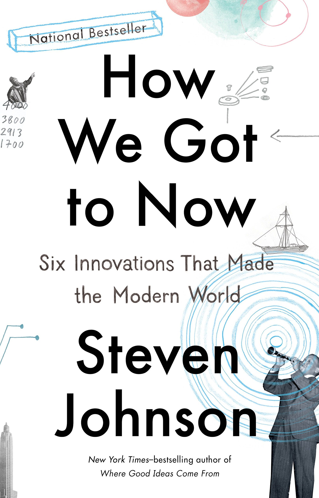

How We Got to Now: Six Innovations That Made the Modern World
- Read on 2023-02-19
- Rating: ️️️️️
- Format: 🎧 (10 hours 11 minutes)
3.5 stars? An interesting, short book. I'd like to modify the subtitle of this book slightly - instead of "innovations" I'd say "areas of innovation". Steven Johnson, the author, looks at each of the subjects (glass/cold/sound/clean/time/light), and helps illuminate the connections between innovations in those areas. The book is filled with a variety of interesting tidbits I've already found myself referencing. I'd like more context around a lot of the things Johnson referenced - which I suppose is both a strength of the engaging writing and its subjects, and also a slight weakness of book's brevity. There's no overall narrative either, so this book is simple to pick up and put down without losing much context - and given its length, would be a good one to take on a trip.
- Prior: Tomorrow, and Tomorrow, and Tomorrow
- Next: This Hallowed Ground